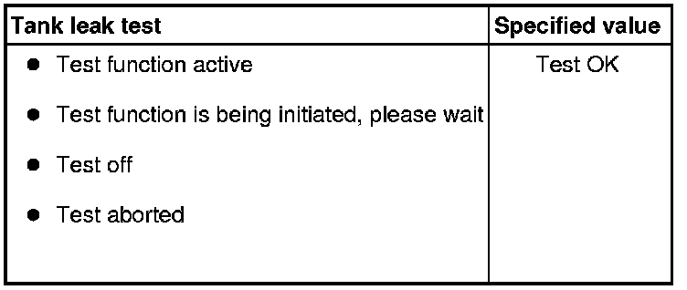

Diagnostic Mode 08 - Request Control of on-Board System, Test or Component
Diagnostic Modes 01 - 09
The information provided in Modes 01 through 09 displays the various levels of emission related data that may be monitored, as well as the ability to retrieve and read stored DTC trouble codes , erase stored DTC trouble codes, generate readiness codes, and select the various PIDs and Test-IDs used within the modes to monitor the engine, and emission related component parameters.
• Depending on scan tool and protocol used, the information displayed may be referred to by different names such as Test-ID (TID), Hex-ID, Component-ID (CID), On-Board Diagnostic Monitor Identifier (OBDMID), or contain no name at all and be referenced by only a number.
Diagnostic Mode 08 - Request Control of On-Board System, Test or Component
Diagnostic Mode 08 is used to control the operation of an on-board system, test or component. A Mode 8 service can be used to turn on-board system ON or OFF, or to cycle an on-board system, test or component ON or OFF for a specific period of time. The service can also be used to request system status or to report test results.
Diagnostic Mode 08, TID $01
Diagnostic Mode 08, TID $01 is used to determine if the evaporative system may be leaking.
Depending on the scan tool being used, the function test in Diagnostic Mode 08 may or may not be able to be performed.
If the scan tool being used will operate Diagnostic Mode 08, perform the test below.
If the scan tool being used will not operate Diagnostic Mode 08, refer to EVAP System, Checking for Leaks. EVAP System, Checking for Leaks
• Always follow the manufacturers instructions for the scan tool being used.
Test requirements
• No DTCs stored in the DTC memory.
• Intake Air Temperature (IAT) maximum 60° C.
• Coolant temperature 80 -110° C.
• Throttle valve angle 12.0 - 16.0%.
Function test
• If the accelerator pedal is depressed during the test, the test will be aborted.
- Connect the scan tool.
- Start the engine and run at idle for at least 15 minutes.
- Select "Diagnostic Mode 08 - Tank Leak Test".
- Select " Tank Leak Test".
- Check the specified value of the tank leak test at idle.
- The following may be displayed on the scan tool screen:

- Switch the ignition off.
If the specified result is obtained:
System OK.
If the specified result is not obtained:
- Repeat the tank leak test, switch the ignition off and start the engine again and let run for 15 minutes at idle.
- Switch the ignition off.
If the specified result is again not obtained:
- A leak may be present.